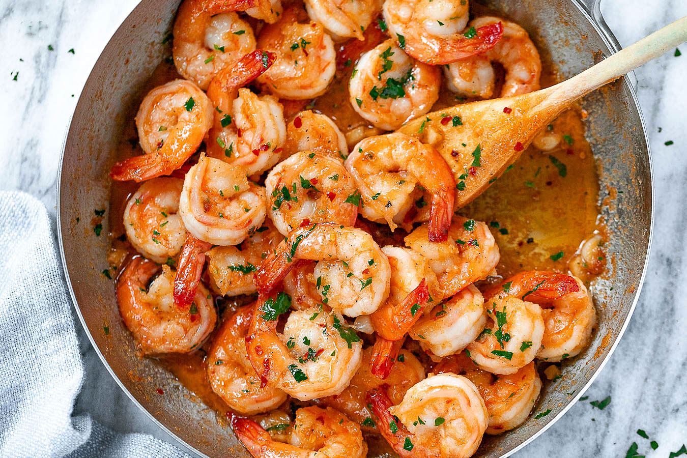

Garlic Butter Shrimp

Garlic and butter. The two greatest pleasures in life. The two ingredients I could
probably live off of for the rest of my life. And when you combine these two in a
glorious shrimp skillet, well, its nothing short of perfection.
Ingredients
FOR THE SHRIMP
- 8 tablespoons 1 stick unsalted butter, divided
- Kosher salt and freshly ground black pepper, to taste
- 5 cloves garlic, minced
- ¼ cup chicken stock
- Juice of 1 lemon, or more, to taste
- 2 tablespoons chopped fresh parsley leaves
Instructions
- Melt 2 tablespoons butter in a large skillet over medium high heat. Add shrimp, salt and pepper, to taste.
Cook, stirring occasionally, until pink, about 2-3 minutes; set aside.
- Stir in shrimp and gently toss to combine.
- SServe immediately, garnished with parsley leaves, if desired..